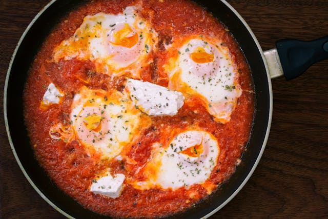

Home
BBQ Egg Whites

Description
Create nutritious and delicious BBQ Egg whites whith the below ingredients
and instructions. This meal is low in fat and high in protein!
Ingredients
- liguid egg whites
- sugar-free bbq sauce
- seasoning salt
- olive oil
Steps
- set a large non-stick pan to medium heat on a stovetop
- apply a light layer of olive oil to the base of the pan
- add 100g of liquid egg whites to the pan
- wait for the egg whites to harden and start to slowly bubble
- add seasoning salt as the egg heats
- flip the egg whites with a spatula and let the egg cook through
- use the spatula to slide the egg onto a plate and drizzle with bbq sauce
- enjoy!